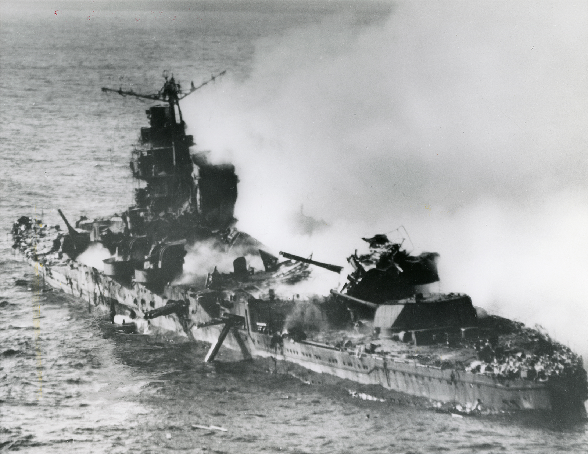
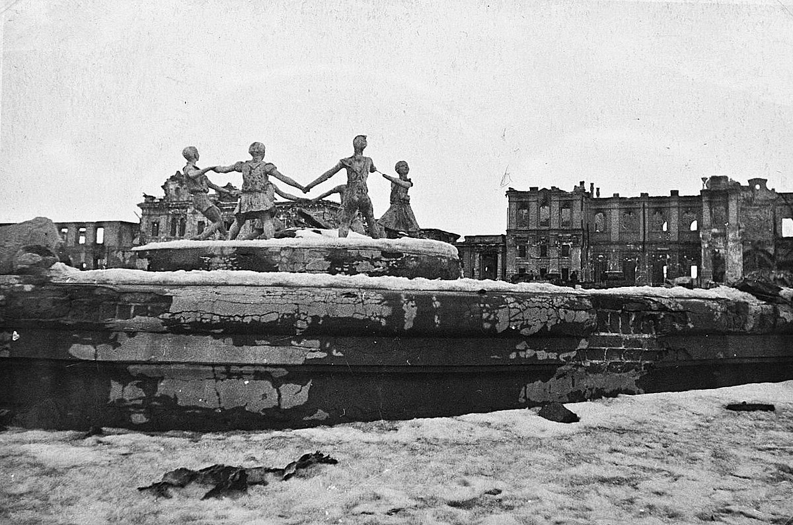
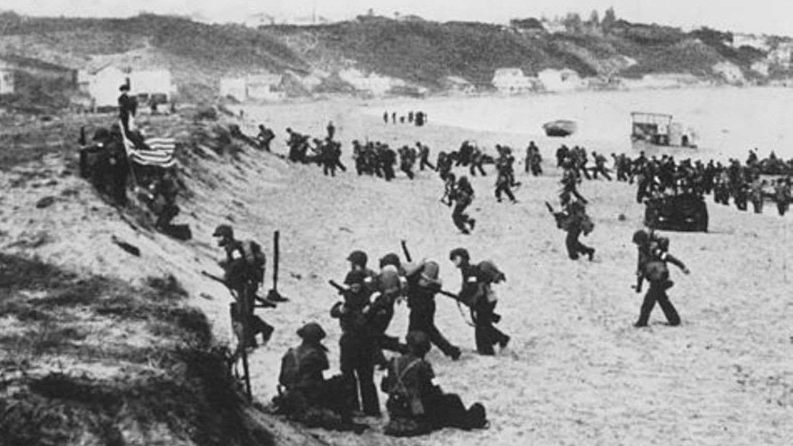

Slag bij Midway
 Tegen het einde van april 1942 hadden Japan en haar bondgenoot Thailand Birma, Malaysie, Indonesie, Singapore en Rabaul veroverd. In mei 1942 vielen de Amerikaans gecontroleerde Filipijnen, maar in juni 1942 boekten de Amerikanen een grote winst bij Midway. Vier Japanse vliegdekschepen werden toen vernietigd door de Amerikanen. Battle of Midway: How the US won over the Japanese - Animated History
Fall Blau
 In mei 1942 beginnen de Duitsers een offensief in Zuid-Rusland om daar de olievelden te controleren. Tegen mid-november haddenen zij bijna Stalingrad in handen maar glipte weg. De sovjets willen koste wat het kost Stalingrad in handen houden. De slag bij Stalingrad wordt als de meest belangrijke slag gezien in de hele Tweede Wereldoorlog. Battle of Stalingrad (1942-43)
Operatie Torch
 In november 1941 startten de Britten een offensief om de Italiaanse en Duitse winsten terug te winnen. Dat verliep erg goed. In begin mei 1942 namen de Britten Madagaskar in beslag vanwege de angst dat Japan het eiland zou gebruiken als basis. Daarbij begon ook de slag bij Gazala waarbij de Asmogendheden een grote winst boekten, maar tegengehouden werden bij El-Alamein. In Augustus 1942 weerstonden de Britten een tweede aanval op El-Alamein en begonnen daarna een tegenaanval. In november 1942 landden Engelse en Amerikaanse troepen in Frans Noord-Afrika en dat resulteerde in de toetreding van de regio tot de geallieerden. North African Campaign 1942 | Animated History